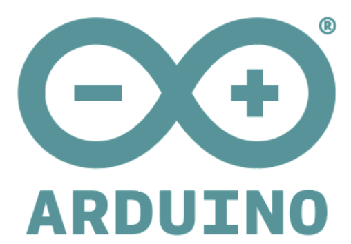
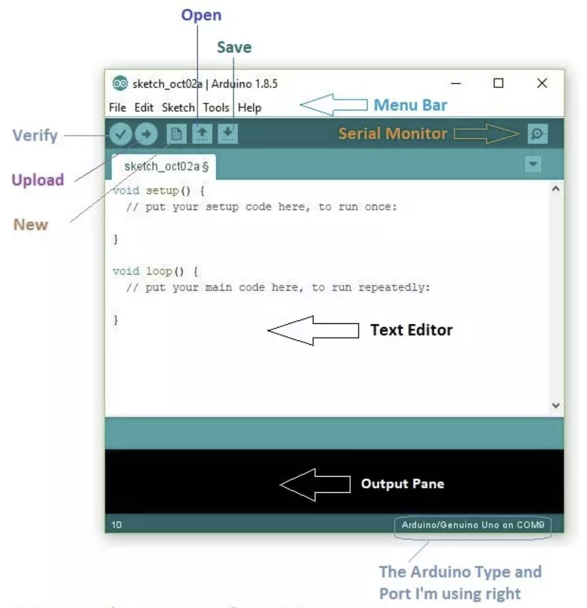
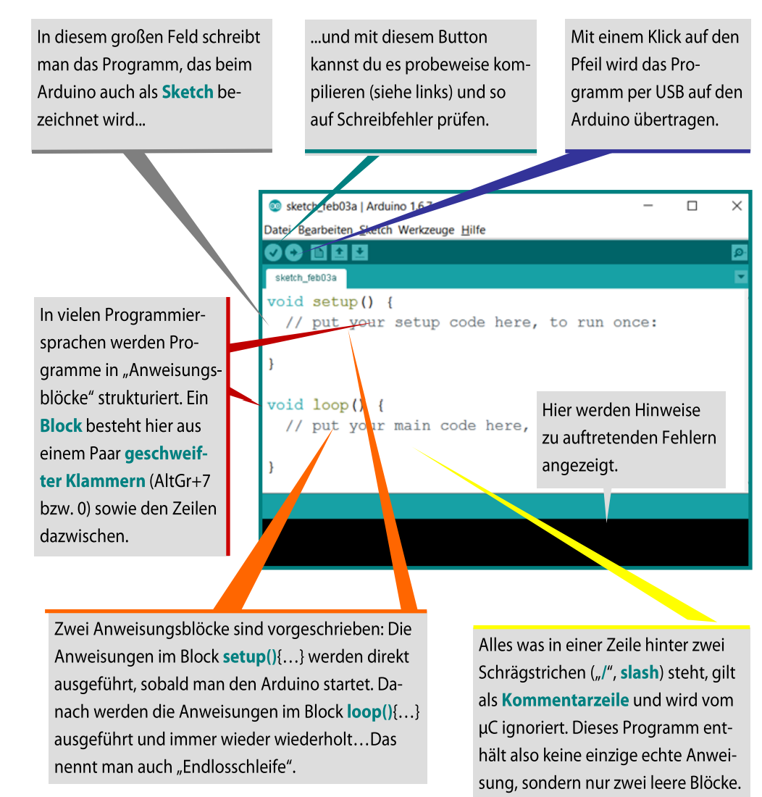
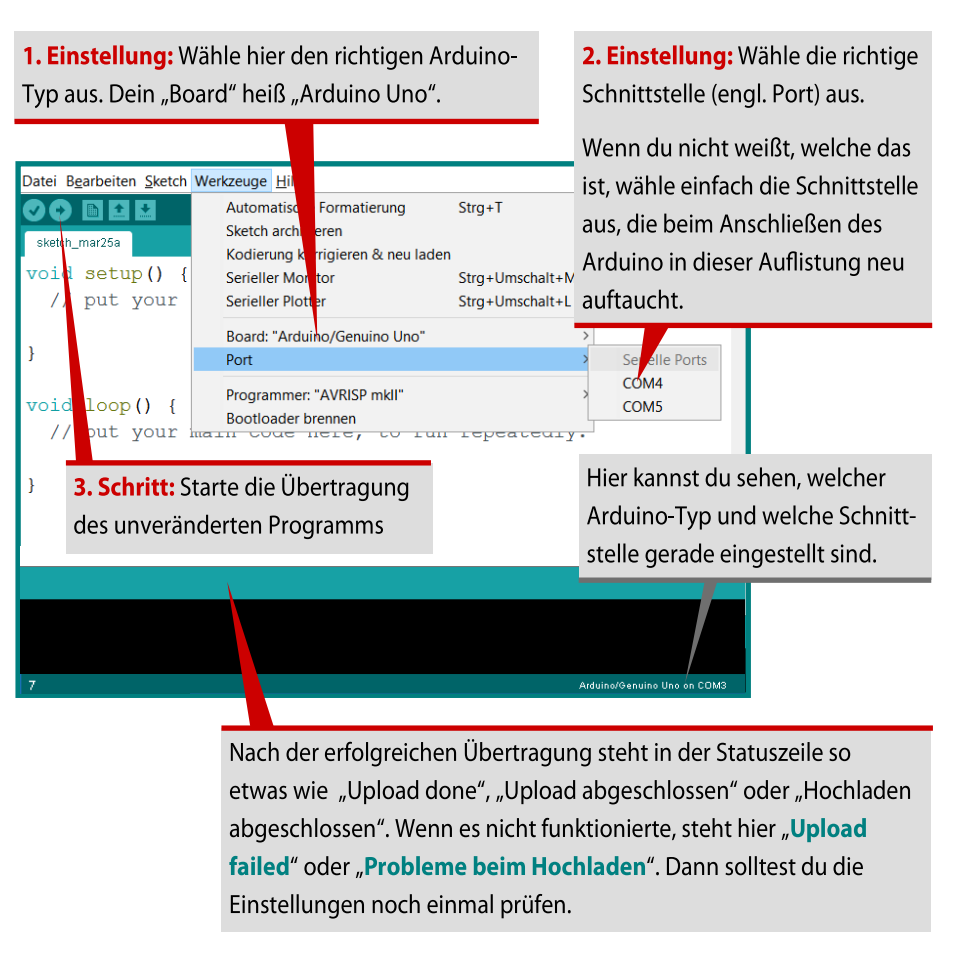
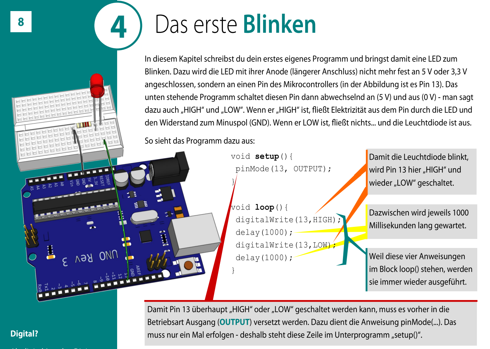
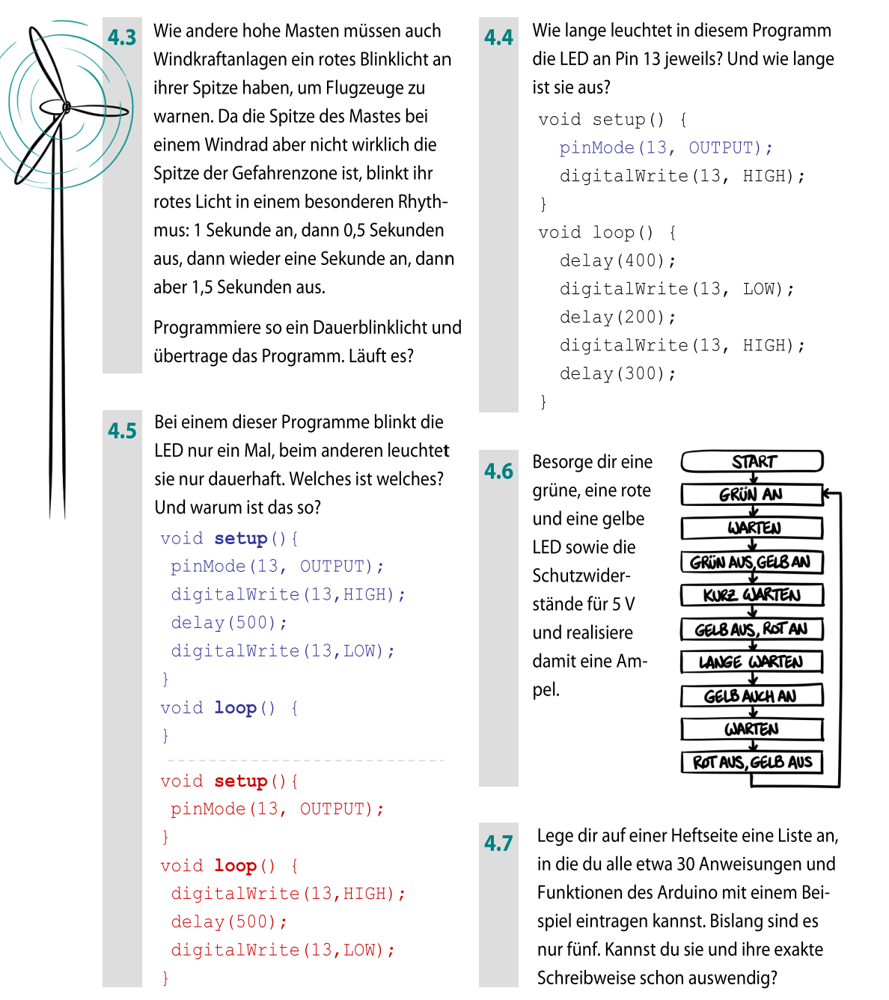
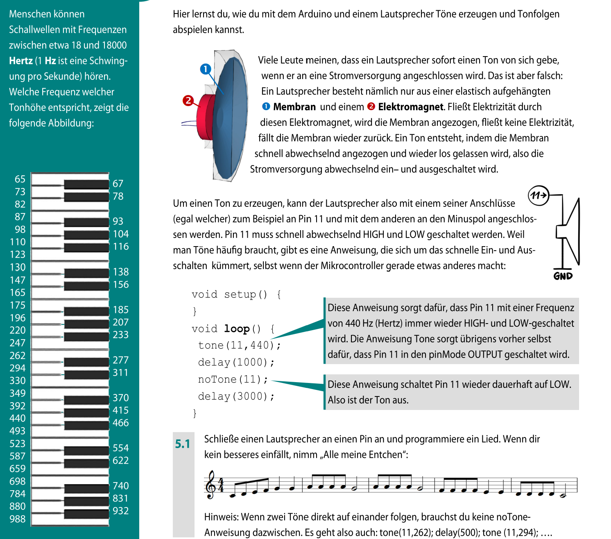
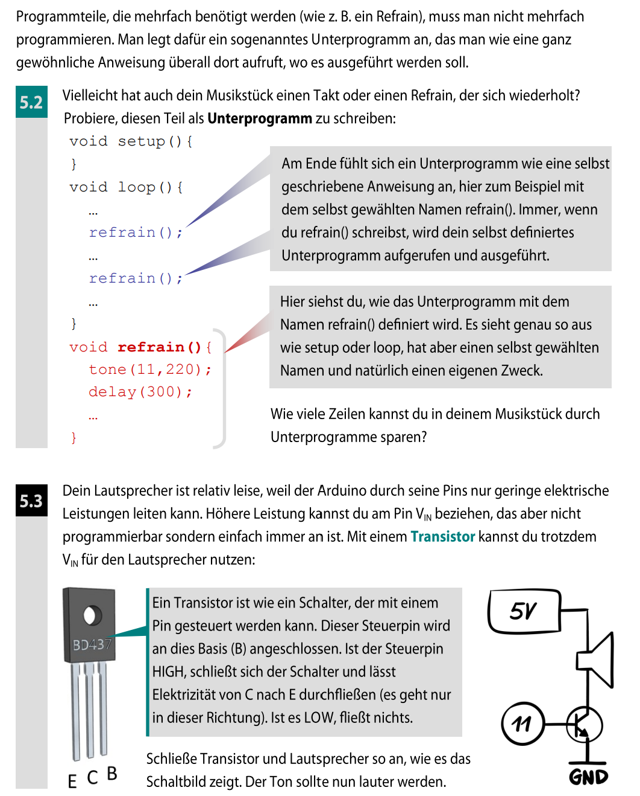

Du übersetzt einen geplanten Ablauf in Arduino-Code, überträgst ihn kontrolliert und liest anschließend Zeile für Zeile, wie daraus ein beobachtbares Verhalten entsteht.
Im ersten Modul stand die Hardware im Mittelpunkt: Pins, LED, Widerstand und Stromkreis. Jetzt kommt die zweite Hälfte dazu: Du gibst dem Arduino mit einem Programm genaue Anweisungen.
Dafür arbeitest du nicht in OneNote und nicht im Browser, sondern in einem neuen Programm: der Arduino-IDE. IDE bedeutet Entwicklungsumgebung. Das ist dein Arbeitsplatz zum Schreiben, Prüfen und Übertragen von Code.


setup()?loop()?
Markiere im Bild setup() und loop(). Ordne jede Codezeile einem der beiden Zeitpunkte zu: einmal beim Start oder fortlaufend während des Betriebs.
Prüffrage: Wo gehört eine Pin-Konfiguration hin, wo das wiederholte Schalten?

Finde im Bild vier Kontrollpunkte: USB-Verbindung, Board, Port und Kompilierung. Erst wenn sie stimmen, ist der Upload aussagekräftig.
Diagnose: Ein Sketch ist fehlerfrei, lässt sich aber nicht hochladen. Welche zwei Einstellungen prüfst du zuerst?

Unterstreiche die beiden Zustandswechsel und kreise die Wartezeiten ein. Zeichne danach für zwei Sekunden eine Zeitlinie mit den Zuständen HIGH und LOW.
Variation: Sage voraus, wie delay(200) und delay(800) den Rhythmus verändern.
OUTPUT,
HIGH, LOW und die beiden Wartezeiten.
void setup() {
pinMode(13, OUTPUT);
}
void loop() {
digitalWrite(13, HIGH);
delay(1000);
digitalWrite(13, LOW);
delay(1000);
}setup() bereitet vor. loop() wiederholt. Blinken entsteht nicht durch einen Spezialbefehl, sondern durch den Wechsel aus HIGH, Warten, LOW, Warten.
;.
Das passiert besonders oft am Anfang.
( oder ),
{ }.

Notiere vor jedem Test deine Vorhersage. Verändere dann Pin, Zustand oder Zeitwert einzeln und vergleiche Soll- und Istverhalten.
So kannst du aus einer Beobachtung tatsächlich auf die Ursache schließen.

Ordne den Argumenten von tone() Pin, Frequenz und Dauer zu. Sage voraus, welcher Zahlenwert die Tonhöhe verändert und welcher nur die Tondauer.
Experiment: Verdopple nur die Frequenz und beschreibe den Unterschied.
tone(11, 262);delay(500);noTone(11);refrain();.
loop()
und setup() stehen.
Sonst erkennt der Compiler sie nicht korrekt.

Markiere im Bild, wo eine Funktion definiert und wo sie aufgerufen wird. Erkläre anschließend, weshalb ein sprechender Funktionsname den Ablauf verständlicher macht.
Transfer: Welche Befehle würdest du in eine Funktion signalTon() auslagern?
Eine Funktion ist kein zweites Programm. Sie ist ein benannter Codeabschnitt, den du gezielt aufrufst. Dadurch wird dein Programm kürzer, lesbarer und leichter zu ändern.
Zum Schluss gibst du deinen Namen links unten ein und klickst auf Ergebnisse & Abschluss. Deine Antworten werden an deine Lehrerin übertragen und zusätzlich als TXT-Datei exportiert.